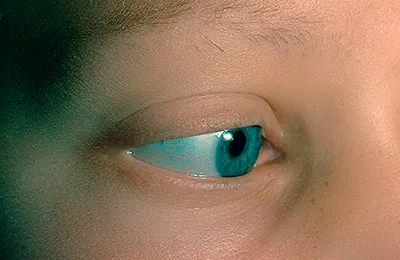

Eye diseases

Eyelashes - long, thick - the dream of any girl. But like any human organ, they are subject to various diseases. Some of them are the result of rash and careless actions.
What are eyelash diseases? What are the symptoms of the pathological process? Is there an adequate treatment or is there only one way out - plucking the affected hairs?
Eyelash diseases and their symptoms
Eyelash diseases can be divided into 2 groups - parasitic lesions and changes in the physiological features of the structure of the organ.
- The first group includes:
- pediculosis
- demodicosis
In the first case, pubic lice cause the disease. Their head relatives on the eyelashes and other areas covered with hair do not live. Infection occurs by contact.
- Symptoms of the disease:
- itching
- conjunctivitis
- gray bloom on the hairs
- traces of blood.
In the second case, the infectious agent is a microscopic mite. This insect lives in the ducts of the hair follicles and sebaceous glands and is considered representative of the conditionally pathogenic microflora.
Most often, this disease is diagnosed in veterinary practice, but it is also found in humans.
- Signs of pathology:
- discharge from the eyes
- hyperemia of the margin of the eyelid
- hypertrophy of the eyelid margin
- reduced production of tear fluid
- development of dry eye syndrome
- hair loss
- The second group of diseases is associated with impaired growth of eyelashes and their number. Pathologies of this group include:
- trichiasis - in this case, the eyelashes grow in the wrong direction in the direction of the eyeball. There may be a single hair, and maybe a lot - along the entire length of the edge of the eyelid
- Distichiasis is a congenital pathology, in which 2 strips of hairs grow on each eyelid. That is, doubling the number of hairs
- hypertrichosis - an acquired disease. Increase the number of hairs with a normal number of ciliated rows
- hypotrichosis - you can find a photo on the Internet - the complete or partial absence of hairs. Often this is an acquired pathology, which is a consequence of a severe illness with aggressive treatment.
All of these pathologies may be accompanied by conjunctivitis, blepharitis, in severe cases, a corneal ulcer or sclera develops.
Diagnostics and treatments
For a preliminary diagnosis, visual inspection by an ophthalmologist is sufficient. If you suspect:
- pediculosis - microscopic examination is shown to identify the parasite
- demodicosis - skin scraping to identify a microorganism
- other pathologies - examination and counting the number of hairs in the ciliary row
Therapeutic tactics depend on the diagnosis and is selected individually for each case. In addition to the treatment of the underlying disease, antibiotic concomitant therapy and vitamin drops are shown to improve the condition of the eye analyzer
- Our readers recommend!
- Use Nicotinic acid for eyelashes and eyebrows
- Medical drops to stimulate the growth of eyelashes
- The composition and effectiveness of serum Careprost for the growth of eyelashes
Pediculosis treatment
The principle of therapy is to destroy adults and nits. This will have to remove the habitat of the parasites. The hair is cut off.
Other parts of the body are treated with anti-pediculosis preparations, but it is desirable to remove the hair covering in the armpits and in the pubic zone. Erythromycin ointment is applied to the growth zone of the eyelashes 3 times a day.
In addition - renovation of the premises and clothing, anti-pediculosis preparations for persons who have come in contact with the patient.
Demodecosis
Treatment of this disease involves an integrated approach. Showing both system-wide and local drugs, diet, means to improve the body's defenses.
- What doctor will prescribe:
- Metronidazole or drugs based on it orally.
- Ointment with sulfur, tar, ichthyol for local treatment.
- Alcohol tinctures to remove crusts from the eyelids.
- Preparations for improving the gastrointestinal tract, general immunity.
Trichiasis
The treatment of this pathology is to remove hairs that grow in the wrong plane with respect to the ciliary row. The techniques consist in mechanical pulling, cryotherapy, electrolysis or surgical removal of the affected area. Additionally, the treatment of associated diseases.
Changes in the color and number of hairs A change in the color of the eyelashes and their complete loss does not cure, but is only observed. They are treating diseases that supposedly caused this pathology.
The excess ciliary row, incorrectly overgrown hairs are removed with the help of surgical intervention. If the disease does not cause inflammation in the eye system, then the patient is under dynamic observation.
From which the lashes fall out? Hair loss in the edge of the eyelid is a normal situation if up to 5 hairs are lost per day. New grow fast. If there is a loss of more eyelashes, this may indicate a number of pathological changes in the body.
Why lashes fall out:
Wearing eyelash extensions for a long time.
- Stress and unhealthy diet, lack of vitamins and minerals, the use of extreme diets.
- Hormonal imbalance.
- Acceptance of certain drugs on an ongoing basis.
- Inflammatory processes in the tissues of the visual analyzer. If you notice that the eyelashes began to fall out, any system-wide symptoms were added, then you should go through a comprehensive examination.
Pulling eyelashes - how to treat the disease? Trichotillomania is a pathological condition in which there is an obsessive craving for pulling out hair on the head, eyebrows, and eyelashes. Causes of obsessive state are disorders in higher mental activity.
- Provocative factors:
- stressful situations
- instability of the psyche
- schizophrenia
- psychological and organic injuries
- General methods of treatment of this pathology does not exist. Since each case should be approached individually
- As a treatment, use
- depilation
- use of antidepressants and psychotherapy
- in some cases, hormone therapy
- massages
- cryomassage
- psychological methods of treatment when pulling out
Without the elimination of the stress factor that causes the desire to pull out your hair, any methods of treating trichotillomania are not effective.
General recommendations for the preservation of the health of eyelashes In order for cilia to grow long and healthy, it is not necessary to visit beauty salons and spend mad funds.
- Daily care can be budget:
- Do not torture natural cilia with endless extensions. Adhesives for attaching hairs - it's still aggressive chemistry
- Do not constantly use curling tongs. It will make them dull
- Use only high-quality cosmetics. And in the evening, be sure to do makeup removal
- Periodically feed the hair with any natural oil - olive, castor, almond. Even good quality sunflower will do
This is enough to prolong the life of the eyelashes, make them thicker, and the eyes are bright and inviting.

Pink eye With the correct and timely treatment of acute conjunctivitis takes 4-5 days, chronic - 4-5 weeks.

Allergic reaction to mascara: causes and effectsAn allergy to mascara is an organism's reaction to a cosmetic.

What is Careprost? Сareprost is a tool for enhancing eyelash growth.

What is trichiasis? Trichiasis should be distinguished from the turn of the century.

What is eyelashes pediculosis? If your eyelashes were always of such length and thickness.

Why some guys have longer eyelashes? Women can say with confidence that men's eyelashes are longer.

Diet for eyelash growth? The first thing that needs to be included in the diet for long eyelashes.

Pink eye remedies In order know remedies for pink eye it is important to learn what pink eye is.

Puffy eyes causes If you are wondering what causes puffy eyes or how to get rid of puffy eyes, then you have come to the right place.

Dark circlesEyes have a significant role in escalating a person's personality.

Vitamins for eye health Antioxidants and vitamins are very essential in order to have healthy and sparkling eyes.

Blepharoplasty It is possible that anyone who had an eye infection or problem may know about Blepharoplasty.

Bimatoprost: before and afterIn most cases, eyelashes suffer from external negative factors

Eye twitch cause One fine morning you wake up only to find involuntary spasms around your eyes that concern you with the question, why is my eye twitching?

Buy Bimatoprost Buy Careprost price 29$ Order online careprost without prescription. Bimatoprost 0.03 % discount prices. Save 20%. Absolute privacy. Worldwide shipping.